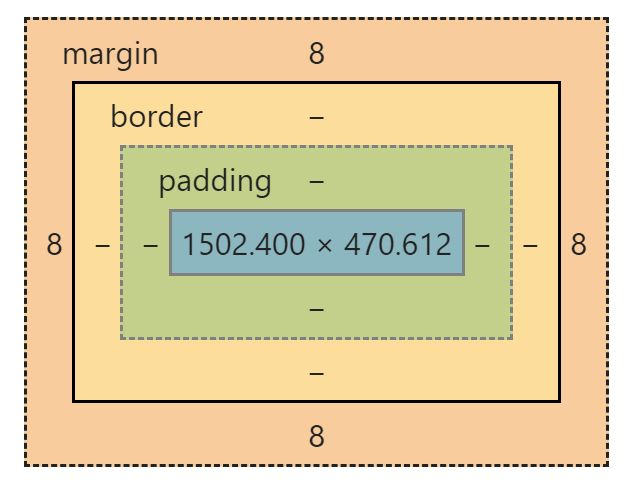
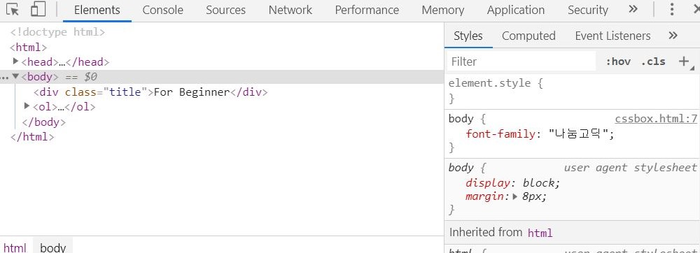
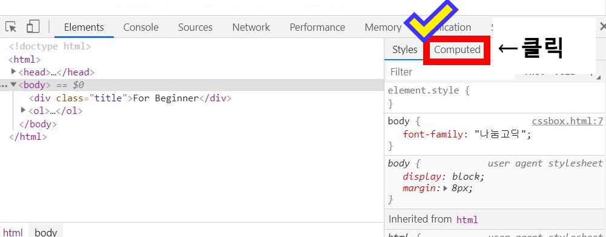
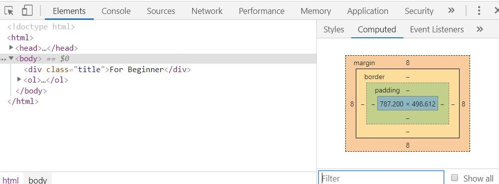
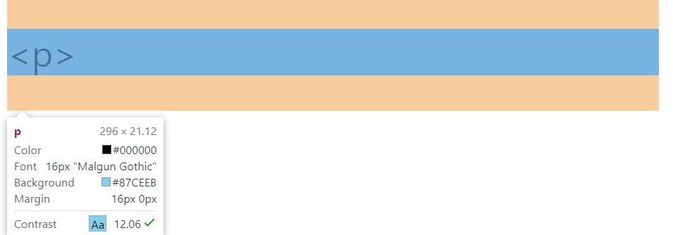
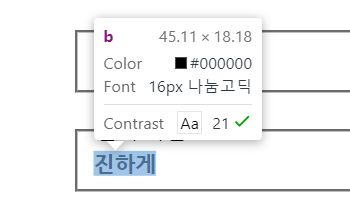

모든 HTML 요소들은 아래의 박스 모양을 차지하고 있다. CSS Box Model은 Content, Padding, Border, Margin으로 이루어져 있다.

■ CSS Box Model 요소
- Content : 텍스트나 <img>태그처럼 자신의 영역만 차지하는 요소
- Padding : Border 요소와 Content 요소 사이에 있는 안쪽 여백
- Border : Content+Padding 요소를 감싸고 있는 영역
- Margin : Border의 바깥 여백
- [F12]를 눌러 개발자도구를 연다.
- 개발자도구에서 [Elements]-[Computed]를 누르면 CSS box가 나온다.
- 개발자도구 좌측 상단에 있는 사각형에 마우스가 올라가 있는 아이콘을 클릭한다.
- 아이콘을 클릭한 후, 궁금한 태그를 클릭해서 해당 태그가 얼마나 공간을 차지하고 있는지 확인한다.


↓↓

- block level element
- inline element
block level element (블록 레벨 엘리먼트). 화면 전체 테두리를 쓰는 태그들을 말한다. 대표적인 태그는 <h1>~<h6>, <ol>, <ul>, <li>, <p> 등의 태그들이 있다.
예시)
<p>태그는 Content와 상,하 Margin요소를 가지고 있는 block level element 태그이다.
inline element (인라인 엘리먼트). 자기 contents 만큼의 테두리를 쓰는 태그들을 말한다. 대표적인 태그는 <img>, <a>, <span>, <b>, <big> 등의 태그들이 있다.
예시)
<b>태그는 Content로만 이루어진 inline element 태그이다.
